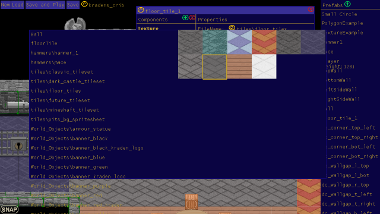
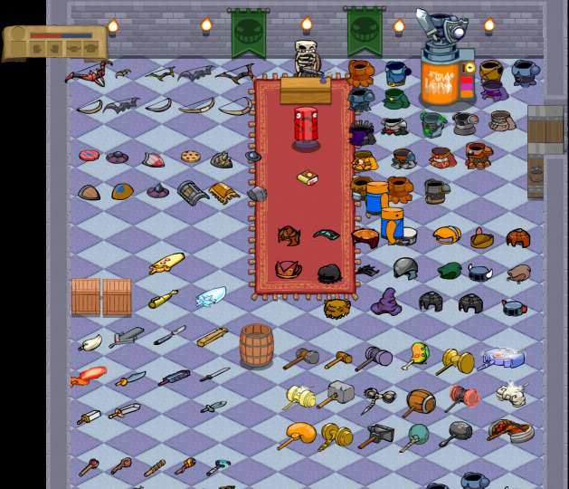
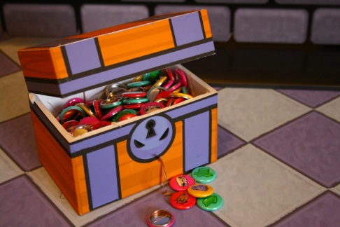

Jul 4, 2014London Anime and Gaming ConventionAs I write this Sam, Peter, and Brett are setting up a stand at the London Anime and Gaming Convention (our first con). The team operate from different parts of the world so I am staying up late to be available in case anything goes wrong. Claudio and I are both jealous as we sit at home and wait for any news or pictures. At first I saw the convention as a great way to show off our game and get some feed back. Soon we will know how that goes but I want to talk about a second unexpected benefit we discovered. Over the last 8 months we had been grinding away at the core of Kraden Crypt, which consists mainly of spine animations, physics integration, a relatively unique control scheme, and a level editor. We sat down occasionally to talk about what features should come next but mostly I could pick and choose the work to satisfy my whims. The problem with this is that after 8 months of work we hardly had a game. We had lots of parts that could be used to make a game, but it was not a game. It felt more like a proof of concept. Then we were offered a free table at a convention and suddenly we needed a demo, something that would do it's best to represent what the finished game will be like. Sam and Peter originally attracted me to their team with an animated video of what they wanted the game to look like, and this became a goal state for the demo. We separated our todo list in to pre-con and post-con features. This gave us a great way to know what to work on, if it's not important for the demo then it was cut. We updated this list quite a few times cutting and adding as our needs changed but it was a great compass to steer our work by. Today we have a demo that I am proud of, and it's fun to play! My post-con todo list is a couple pages long, and there are pre-con tasks that require a little clean up, but it feels great to be iterating on what feels like a real game. I'm hoping that we can take what we learned here and use it to push Kradens Crypt through various milestones and end up with a completed game. Thank you London Anime and Gaming Convention for giving us a leg up!  |
There and back again, an OOP tale Basic C# Auto Updater Pillars of Eternity is broken. A Silly Mistake Tweaking The Farseer Engine London Anime and Gaming Convention Sword Controls Update Texture Bleeding MoonBus Post Mortem Optimizing drawing with Sprite Sheets (Android) Space Crazy Prototype Android resource scaler my history with programming |
contact@hernblog.com
Follow @IanMakesGames